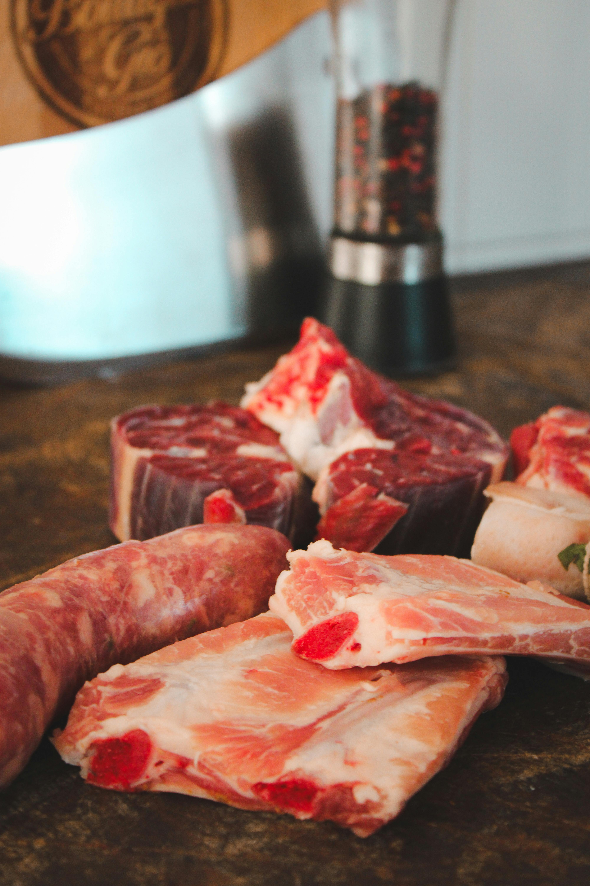
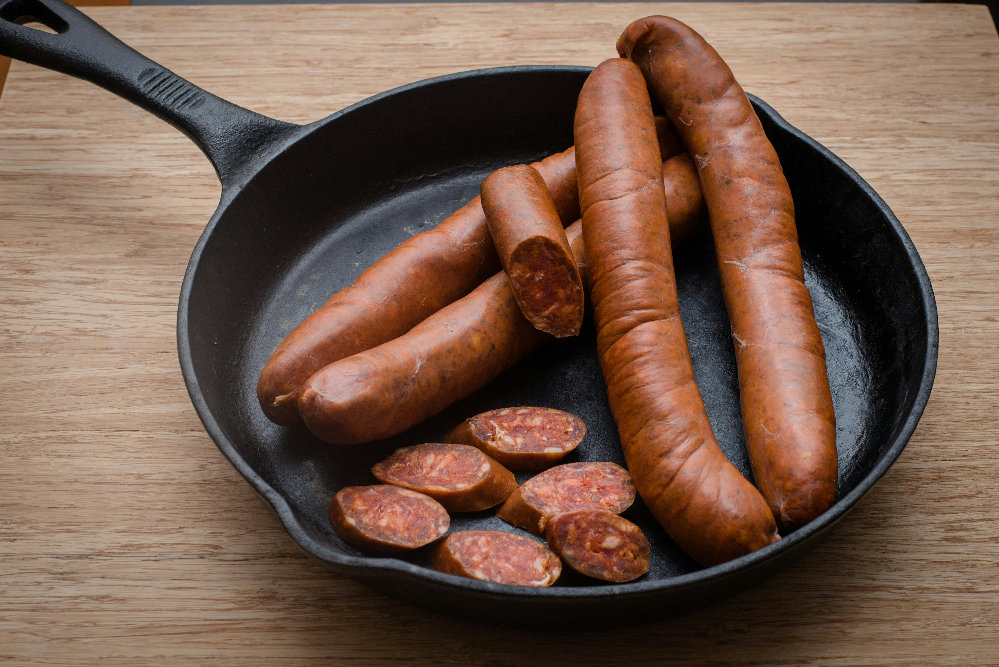
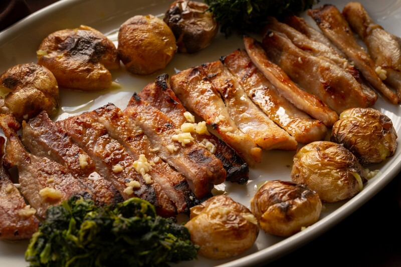

Our Specialties

Fresh Cuts
Premium beef, pork, and lamb cuts prepared fresh daily

Cured Meats
Authentic chorizo, jamón, and traditional Portuguese cured meats

Specialty Items
Traditional Spanish and Portuguese specialty meats and delicacies

Custom Orders
Special requests and bulk orders for restaurants and events